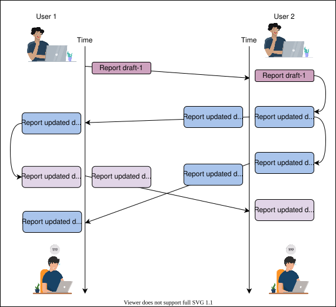
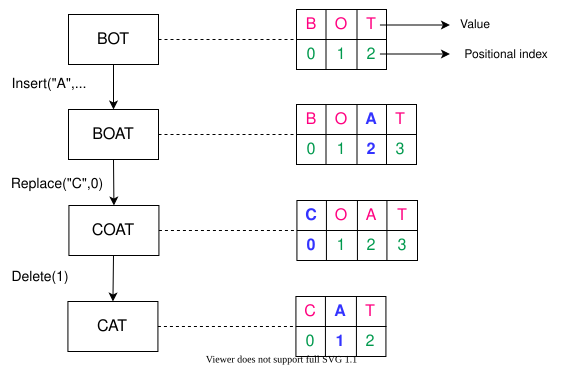
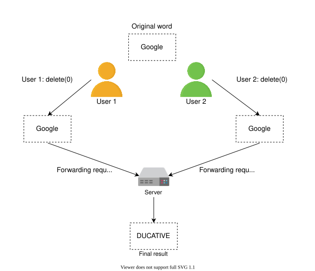
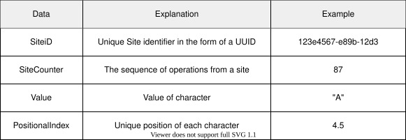
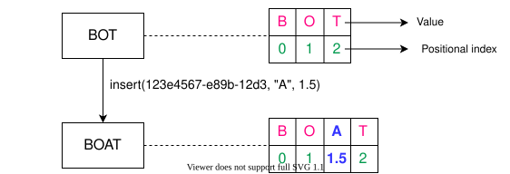
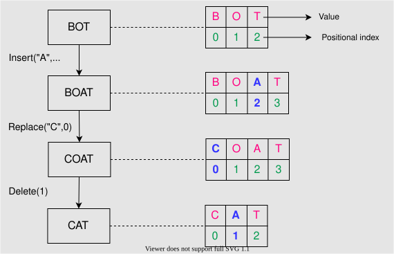

38. Design a Collaborative Document Editing Service - Google Docs
System Design: Google Docs
System Design: Google Docs
Learn what collaborative document editing is and what plan to follow for designing such a service.
We'll cover the following
Problem statement#
Imagine two students are preparing a report on a project they’ve just completed. Since the students live apart, the first student asks the second student to start writing the report, and the first student will improve the received copy. Although quite motivated, the students soon understand that such a collaboration is disorganized. The following illustration shows how tedious the process can get.

The scenario above is one example that leads to time wastage and frustration when users collaborate on a document by exchanging files with each other.
Google Docs#
To combat the problem above, we can use an online collaborative document editing service like Google Docs. Some advantages of using an online document editing service instead of a desktop application are as follows:
- Users can review and comment on a document while it’s being edited.
- There are no special hardware specifications required to get the latest features. A machine that can run a browser will suffice.
- It's possible to work from any location.
- Unlike local desktop editors, users can view long-term document history and restore an older version if need be.
- The service is free of cost.
Other than Google docs, some popular online editing services include Etherpad, Microsoft Office 365, Slite, and many others.
Designing Google Docs#
A collaborative document editing service can be designed in two ways:
- It could be designed as a centralized facility using client-server architecture to provide document editing service to all users.
- It could be designed using peer-to-peer technology to collaborate on a single document.
Most commercial solutions focus on client-service architecture to have finer control. Therefore, we’ll focus on designing a service using the client service architecture. Let’s see how we will progress in this chapter.
Note: According to a survey, 64% of people use Google Docs for document editing at least once a week.
How will we design Google Docs?#
We've divided the design problem into four stages:
- Requirements for Google Docs’ Design: This lesson will focus on establishing the requirements for designing a collaborative document editing service. We’ll also quantify the infrastructure requirements in this stage.
- Google Docs’ Design: The goal of this lesson is to come up with a design that fulfills the requirements of the service. This lesson will explain why a component is used and how it integrates with other components to fulfill functional requirements.
- Concurrency in Collaborative Editing: Online document editing services have to resolve conflicts between users editing the same portion of a document. This lesson covers the type of problems that can arise and the techniques used to resolve such conflicts.
- Evaluating Google Docs’ Design: The main objective of this lesson is to evaluate our design for non-functional requirements. Mainly, we see if our design is performant, consistent, available, and scalable.
Let’s begin with a look at our requirements.
Requirements of Google Docs’ Design
Requirements of Google Docs’ Design
Learn about the requirements for designing a collaborative editing service.
Requirements#
Let’s look at the functional and non-functional requirements for designing a collaborative editing service.
Functional requirements#
The activities a user will be able to perform using our collaborative document editing service are listed below:
- Document collaboration: Multiple users should be able to edit a document simultaneously. Also, a large number of users should be able to view a document.
- Conflict resolution: The system should push the edits done by one user to all the other collaborators. The system should also resolve conflicts between users if they’re editing the same portion of the document.
- Suggestions: The user should get suggestions about completing frequently used words, phrases, and keywords in a document, as well as suggestions about fixing grammatical mistakes.
- View count: Editors of the document should be able to see the view count of the document.
- History: The user should be able to see the history of collaboration on the document.
A real-world document editor also has to have functions like document creation, deletion, and managing user access. We focus on the core functionalities listed above, but we also discuss the possibility of other functionalities in the lessons ahead.
Non-functional Requirements#
- Latency: Different users can be connected to collaborate on the same document. Maintaining low latency is challenging for users connected from different regions.
- Consistency: The system should be able to resolve conflicts between users editing the document concurrently, thereby enabling a consistent view of the document. At the same time, users in different regions should see the updated state of the document. Maintaining consistency is important for users connected to both the same and different zones.
- Availability: The service should be available at all times and show robustness against failures.
- Scalability: A large number of users should be able to use the service at the same time. They can either view the same document or create new documents.
Resource estimation#
Let’s make some resource estimations based on the following assumptions:
- We assume that there are 80 million daily active users (DAU).
- The maximum number of users able to edit a document concurrently is 20.
- The size of a textual document is 100 KB.
- Thirty percent of all the documents contain images, whereas only 2% of documents contain videos.
- The collective storage required by images in a document is 800 KB, whereas each video is 3 MB.
- A user creates one document in one day.
Based on these assumptions, we’ll make the following estimations.
Storage estimation#
Considering that each user is able to create one document a day, there are a total of 80 million documents created each day. Below, we estimate the storage required for one day:
Note: We can adjust the values in the table below to see how the storage requirement estimations change.
Estimation for Storage Requirements
| Number of documents created by each user | 1 | per day |
| Number of active users | 80 | Million |
| Number of documents in a day | f80 | Million |
| Storage required for textual content per day | f8 | TB |
| Storage required for images per day | f19.2 | TB |
| Storage required for video content per day | f4.8 | TB |
| Total storage required per day | f32 | TB |
Total storage required for one day is as follows: 8+19.2+4.8=32 TBs per day
Note: Although our functional requirements state that we should keep a history of documents, we didn’t include storage requirements for historical data for the sake of brevity.
Bandwidth estimation#
Incoming traffic: Assuming that 32 TB of data are uploaded per day to the network of a collaborative editing service, the network requirement for incoming traffic will be the following:
8640032 TB×8=3Gbps approximately
Outgoing traffic: To estimate outgoing traffic bandwidth, we’ll assume the number of documents viewed by a user each day. Let’s consider that a typical user views five documents per day. Then, the following calculations apply:
Note: We can adjust the values in the table below to see how the calculations change.
| Number of documents viewed by users | 5 | per day |
| Number of active users | 80 | Million |
| Number of documents viewed in a day | f400 | Million |
| Number of documents viewed in a second | f4630 | per second |
| Bandwidth required for textual content per second | f3.704 | Gigabits per second(Gbps) |
| Bandwidth for image-based content per second | f8.89 | Gbps |
| Bandwidth for video content per second | f2.22 | Gbps |
| Total outgoing bandwidth required | f14.81 | Gbps |
Note: The total bandwidth required is equal to the sum of incoming and outgoing traffic. =3+14.7≈18Gbps approximately.
Number of servers estimation#
Let’s assume that one user is able to generate 100 requests per day. Keeping in mind the number of daily active users, the number of requests per second (RPS) will be the following:
100×80M=864008000M=92.6 thousands/sec.
Number of RPS
| Requests by a user | 100 | per day |
| Number of DAU | 80 | Million |
| RPS | f92.6 | Thousands per second |
We discussed in the Back of the Envelope lesson that RPS isn’t sufficient information to calculate the number of servers. We’ll use the following approximation for server count.
To estimate the number of servers required to fulfill the requests of 80 million users, we simply divide the number of users by the number of requests a server can handle. In the “Back of the Envelope” lesson, we discussed that our reference server can handle 8,000 requests per second. So, we see the following:
Queries handled per secondNumber of daily active users=800080M=10,000
Informally, the equation above assumes that one server can handle 8,000 users.
Building blocks we will use#
We’ll use the following building blocks in designing the collaborative document editing service.
- Load balancers will be the first point of contact for users.
- Databases will be needed to store several things including textual content, history of documents, user data, etc. For this purpose, we may need different types of databases.
- Pub-sub systems can complete tasks that can't be performed right away. We'll complete a number of tasks asynchronously in our design. Therefore, we'll use a pub-sub system.
- Caching will help us improve the performance of our design.
- Blob storage will store large files, such as images and videos.
- A Queueing system will queue editing operations requested by different users. Because many editing requests can’t be performed simultaneously, we have to temporarily put them in a queue.
- A CDN can store frequently accessed media in a document. We can also put read-only documents that are frequently requested in a CDN.
Design of Google Docs
Design of Google Docs
Let's understand how we can design the collaborative document editing service using various components.
We'll cover the following
Design#
We’ll complete our design in two steps. In the first step, we’ll explain different components and building blocks and the reason for their choice in our design. The second step will describe how we fulfill various functional requirements by depicting a workflow.
Components#
We’ve utilized the following set of components to complete our design:
- API gateway: Different client requests will get intercepted through the API gateway. Depending on the request, it’s possible to forward a single request to multiple components, reject a request, or reply instantly using an already cached response, all through the API gateway. Edit requests, comments on a document, notifications, authentication, and data storing requests will all go through the API gateway.
- Application servers: The application servers will run business logic and tasks that generally require computational power. For instance, some documents may be converted from one file type to another (for example, from a PDF to a Word document) or support features like import and export. It’s also central to the attribute collection for the recommendation engine.
- Data stores: Various data stores will be used to fulfill our requirements. We’ll employ a relational database for saving users’ information and document-related information for imposing privilege restrictions. We can use NoSQL for storing user comments for quicker access. To save the edit history of documents, we can use a time series database. We’ll use blob storage to store videos and images within a document. Finally, we can use distributed cache like Redis and a CDN to provide end users good performance. We use Redis specifically to store different data structures, including user sessions, features for the typeahead service, and frequently accessed documents. The CDN stores frequently accessed documents and heavy objects, like images and videos.
- Processing queue: Since document editing requires frequently sending small-sized data (usually characters) to the server, it’s a good idea to queue this data for periodic batch processing. We’ll add characters, images, videos, and comments to the processing queue. Using an HTTP call for sending every minor character is inefficient. Therefore, we’ll use WebSockets to reduce overhead and observe live changes to the document by different users.
- Other components: Other components include the session servers that maintain the user’s session information. We’ll manage document access privileges through the session servers. Essentially, there will also be configuration, monitoring, pub-sub, and logging services that will handle tasks like monitoring and electing leaders in case of server failures, queueing tasks like user notifications, and logging debugging information.
The illustration below provides a depiction of how different components and building blocks coordinate to provide the service.

Quiz
Question 1
Why should we use WebSockets instead of HTTP methods? Why are WebSockets optimal for this kind of communication?
1 of 3
Workflow#
In the following steps, we’ll explain how different requests will get entertained after they reach the API gateway:
- Collaborative editing and conflict resolution: Each request gets forwarded to the operations queue. This is where conflicts get resolved between different collaborators of the same document. If there are no conflicts, the data is batched and stored in the time series database via session servers. Data like videos and images get compressed for storage optimization, while characters are processed right away.
- History: It’s possible to recover different versions of the document with the help of a time series database. Different versions can be compared using DIFF operations that compare the versions and identify the differences to recover older versions of the same document.
- Asynchronous operations: Notifications, emails, view counts, and comments are asynchronous operations that can be queued through a pub-sub component like Kafka. The API gateway generates these requests and forwards them to the pub-sub module. Users sharing documents can generate notifications through this process.
- Suggestions: Suggestions are in the form of the typeahead service that offers autocomplete suggestions for typically used words and phrases. The typeahead service can also extract attributes and keywords from within the document and provide suggestions to the user. Since the number of words can be high, we’ll use a NoSQL database for this purpose. In addition, most frequently used words and phrases will be stored in a caching system like Redis.
- Import and export documents: The application servers perform a number of important tasks, including importing and exporting documents. Application servers also convert documents from one format to another. For example, a
.docor.docxdocument can be converted in to.pdfor vice versa. Application servers are also responsible for feature extraction for the typeahead service.
Note: Our use of WebSockets speeds up the overall performance and enables us to facilitate chatting between users who are collaborating on the same document. If we combine WebSockets with a Redis-like cache, it’s possible to develop an effective chatting feature.
Quiz
Question 1
We’re implementing view counters through an asynchronous method, which means that the number of views of a document may be outdated. Could we use sharded counters or Redis counters to get effective results?
1 of 2
Concurrency in Collaborative Editing
Concurrency in Collaborative Editing
Let’s explore different methods of conflict resolution in concurrent collaboration on a document.
Introduction#
We’ve discussed the design for a collaborative document editing service, but we haven’t addressed how we’ll deal with concurrent changes in the document by different users. However, before discussing concurrency issues, we need to understand the collaborative text editor.
What is a document editor?#
A document is a composition of characters in a specific order. Each character has a value and a positional index. The character can be a letter, a number, an enter (↵), or a space. An index represents the character’s position within the ordered list of characters.
The job of the text or document editor is to perform operations like insert(), delete(), edit(), and more on the characters within the document. A depiction of a document and how the editor will perform these operations is below.

Concurrency issues#
Collaboration on the same document by different users can lead to concurrency issues. Conflicts may arise whenever multiple users edit the same portion of a document. Since users have a local copy of the document, the final status of the document may be different at the server from what the users see at their end. After the server pushes the updated version, users discover the unexpected outcome.
Example 1#
Let’s consider a scenario where two users want to add some characters at the same positional index. Below, we’ve depicted how two users modifying the same sentence can lead to conflicting results:

As shown above, two users are trying to modify the same sentence, “Google by developers.” Both users are performing insert() at index 10. The two possibilities are as follows:
- The phrase “for developers” overwrites “platform.” This leads to an outcome of “for developers.”
- The phrase “platform” overlaps “for developers.” This leads to an outcome of “platformlopers.”
This example shows that operations applied in a different order don’t hold the commutative property.
Example 2#
Let’s look at another simple example where two users are trying to delete the same character from a word. Let’s use the word “Google.” Because the word has an extra “E,” both the users would want to remove the extra character. Below, we see how an unexpected result can occur:

This second example shows that different users applying the same operation won’t be idempotent. So, conflict resolution is necessary where multiple collaborators are editing the same portion of the document at the same time.
From the examples above, we understand that a solution to concurrency issues in collaborative editing should respect two rules:
- Commutativity: The order of applied operations shouldn’t affect the end result.
- Idempotency: Similar operations that have been repeated should apply only once.
Below, we identify two well-known techniques for conflict resolution.
Techniques for conflict resolution#
Let’s discuss two leading technologies that are used for conflict resolution in collaborative editing.
Operational transformation#
Operational transformation (OT) is a technique that’s widely used for conflict resolution in collaborative editing. OT emerged in 1989 and has improved throughout the years. It’s a lock-free and non-blocking approach for conflict resolution. If operations between collaborators conflict, OT resolves conflicts and pushes the correct converged state to end users. As a result, OT provides consistency for users.
OT performs operations using the positional index method to resolve conflicts, such as the ones we discussed above. OT resolves the problems above by holding commutativity and idempotency.
Collaborative editors based on OT are consistent if they have the following two properties:
- Causality preservation: If operation
ahappened before operationb, then operationais executed before operationb. - Convergence: All document replicas at different clients will eventually be identical.
The properties above are a part of the CC consistency model, which is a model for consistency maintenance in collaborative editing.
OT has two disadvantages:
-
Each operation to characters may require changes to the positional index. This means that operations are order dependent on each other.
-
It’s challenging to develop and implement.
Operational transformation is a set of complex algorithms, and its correct implementation has proved challenging for real-world applications. For example, the Google Wave team took two years to implement an OT algorithm.
Conflict-free Replicated Data Type (CRDT)#
The Conflict-free Replicated Data Type (CRDT) was developed in an effort to improve OT. A CRDT has a complex data structure but a simplified algorithm.
A CRDT satisfies both commutativity and idempotency by assigning two key properties to each character:
- It assigns a globally unique identity to each character.
- It globally orders each character.
Each operation now has an updated data structure:

The SiteID uniquely identifies a user’s site requesting an operation with a Value and a PositionalIndex. The value of PositionalIndex can be in fractions for two main reasons.
- The
PositionalIndexof other characters won’t change because of certain operations. - The order dependency of operations between different users will be avoided.
The example below depicts that a user from site ID 123e4567-e89b-12d3 is inserting a character with a value of A at a PositionalIndex of 1.5. Although a new character is added, the positional indexes of existing characters are preserved using fractional indices. Therefore, the order dependency between operations is avoided. As shown below, an insert() between O and T didn’t affect the position of T.

CRDTs ensure strong consistency between users. Even if some users are offline, the local replicas at end users will converge when they come back online.
Although well-known online editing platforms like Google Docs, Etherpad, and Firepad use OT, CRDTs have made concurrency and consistency in collaborative document editing easy. In fact, with CRDTs, it’s possible to implement a serverless peer-to-peer collaborative document editing service.
Note: OT and CRDTs are good solutions for conflict resolution in collaborative editing, but our use of WebSockets makes it possible to highlight a collaborator’s cursor. Other users will anticipate the position of a collaborator’s next operation and naturally avoid conflict.
Quiz
Question 1
Why can’t we use locks to synchronize between users?
1 of 2

Evaluation of Google Docs’ Design
Evaluation of Google Docs’ Design
Let's look at how we’ll fulfill the non-functional requirements in a collaborative document editing system.
We'll cover the following
We’ve now explained the design and how it fulfills the functional requirements for a collaborative document editing service. This lesson will focus on how our design meets the non-functional requirements. In particular, we’ll focus on consistency, latency, scalability, and availability.
Consistency#
We’ve looked at how we’ll achieve strong consistency for conflict resolution in a document through two technologies: operational transformation (OT) and Conflict-free Resolution Data Types (CRDTs). In addition, a time series database enables us to preserve the order of events. Once OT or CRDT has resolved any conflicts, the final result is saved in the database. This helps us achieve consistency in terms of individual operations.
We’re also interested in keeping the document state consistent across different servers in a data center. To replicate an updated state of a document within the same data center at the same time, we can use peer-to-peer protocols like Gossip protocol. Not only will this strategy improve consistency, it will also improve availability.
Quiz
Question
Why should we use strong consistency instead of eventual consistency for conflict resolution in a collaborative document editing service?
Latency#
Latency may feel like a challenge, specifically when two users are distant from each other or the server. However, users maintain a replica of documents at their end while data is being propagated through WebSockets to end-servers. Therefore, user-perceived latency will be low. Apart from this, users mostly tend to write textual data in a document that’s small. Therefore, dissemination of data among different servers within the same facility and among different data centers or zones will be carried out with low latency. Also, files like videos and images can be stored in CDNs for quick serving because this content doesn’t change frequently.
Practically speaking, there will be a limited number of readers and writers of an online document. For readers specifically, latency won’t be an issue because the document will be loaded only once. So, most readers can be served from the same data center. For writers, an optimal zone should be selected as the centralized location between collaborators of the same document. However, for popular documents, asynchronous replication will be an effective method to achieve good performance and low latency for a large number of users. In general, achieving strong consistency becomes a challenge when replication is asynchronous.
Availability#
Our design ensures availability by using replicas and monitoring the primary and replica servers using monitoring services. Key components like the operations queue and data stores internally manage their replication.
Since we use WebSockets, our WebSocket servers can connect users to the session maintenance servers that will determine if a user is actively viewing or collaborating on a document. Therefore, keeping multiple WebSocket servers will increase the availability of the design. Lastly, we employ caching services and CDNs to improve availability in case of failures.
However, at the moment, we haven't devised a disaster recovery management scheme.
Requirements | Techniques |
Consistency |
|
Latency |
|
Availability |
|
Scalability |
|
Scalability#
Since we've used microservice architecture, we can easily scale each component individually in case the number of requests on the operations queue exceeds its capacity. We can use multiple operations queues. In that case, each operations queue will be responsible for a single document. We can forward operations requested by different users that are associated with a single document to a specific queue. The number of spawned queues will be equal to the number of active documents. As a result, we’re able to achieve horizontal scalability.
Conclusion#
In this chapter, we designed an online collaborative document editing service. In our design, we provided features like collaborative editing, keeping version history for reverting to older versions, giving users suggestions on frequently used terms and phrases, and view counts of a document. We also assessed the possibility of adding a chatting feature between users collaborating on the same document. A unique aspect of the design was the conflict resolution between concurrent editing operations by different users. We solved the concurrency issues through OT and CRDT.